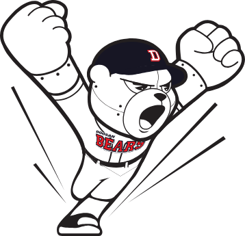

두산은 2010년 2월 11일 새 마스코트를 공개했다. 이름은 철웅이. 배번은 V. 기존의 곰에 나사로 철판을 연결한 것처럼 보이는 사이보그 로봇 곰이다. 공식 홈페이지 마스코트 소개에 의하면 철웅이는 두산의 상징 동물인 곰을 역동적으로 형상화한 로봇 캐릭터로 이는 강인함과 미래지향적인 두산의 이미지를 강조한 것이라고 한다. 또한 두산그룹의 도전과 혁신을 상징하며 현재에 만족하지 않고 정상을 향해 언제나 과감한 변신을 추구하며 한 단계 앞으로 도약하는 명문구단 베어스의 이미지를 표현한 것이라고 한다.
그런데 캐릭터 디자인이 마스코트를 그리다가 실수로 오른쪽 손가락을 하나 더 그리는 바람에 육손곰이라고 놀림을 받았다. 하지만 아래 사진에서 찾으려 들지 말자. 금방 수정되었기 때문. 하여간 못생긴 편이라서 두산 팬들 가운덴 만화가 최훈의 두산 곰 캐릭터가 차라리 낫다고 하는 사람들도 있다. 여담으로 여자 버전 마스코트도 있는데 이름은 철웅희. 요새 안보이는 걸로 봐서는 소리소문 없이 사라진 듯하다. 그런데 철웅이 인형탈 알바가 적재적소에 터져나오는 깝을 시전하면서 이걸 살렸다. 아래와 같은 짓들을 하는데, 매일 매일 베어스포티비에 올라오는 철웅이 영상을 찾아보는 깨알같은 재미를 만끽할 수 있다.팬들 사이에서는 구단주의 성을 따서 ‘박철웅’이라고 부르기도 한다.
